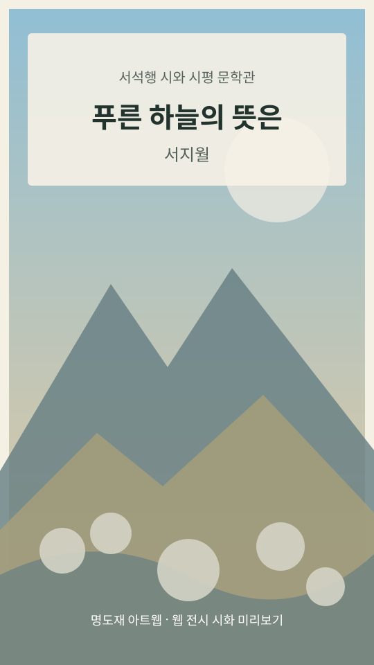

MYEONGDO ARTWEB / LITERARY MUSEUM
시가 그림이 되고,
그림이 다시 문학이 되다
서석행(필명 서지월)의 시 세계와 동시대 추천시를 세 편의 시화와 밀도 있는 문학비평으로 만나는 온라인 문학관입니다.
03 · CRITICISM
문학박사급 시평 · 작품별 1,000자 이내
1. 푸른 하늘의 뜻은
이 시에서 하늘은 단순한 배경이 아니라 화자가 과거의 삶을 더듬어 들어가는 기억의 문이다. 어머니의 노동, 밭둑과 엉겅퀴, 돌무덤과 반달은 서로 다른 감각의 표식이면서도 한 생의 기원을 묻는 상징으로 결합한다. 특히 낮달이 호미의 이미지와 맞닿는 순간, 우주의 질서는 추상적 관념이 아니라 어머니 세대의 생활 세계로 내려온다. 이 작품의 미덕은 향수의 정조에 머물지 않고, 사라진 시간의 흔적을 구체적 사물로 재배열하여 존재의 뿌리를 성찰하게 한다는 데 있다. 회상은 감상적 퇴행이 아니라 삶과 죽음이 공존하는 현실의 지형을 다시 읽는 인식 행위가 된다.
310자 · 문학적 해설
2. 비슬산 참꽃
「비슬산 참꽃」은 자연 풍경을 공동체 기억의 저장소로 전환하는 서정시다. 참꽃은 눈으로 보는 꽃이면서 동시에 다듬잇소리와 아리랑을 불러오는 청각의 매개이기도 하다. 초가집, 툇마루, 어머니와 누이의 노동이 꽃의 이미지 속으로 스며들면서 비슬산은 한 지역의 정체성과 생활 문화를 품는 장소로 격상된다. 작은 꽃 한 송이가 역사와 생활의 리듬을 품는 방식은 축소와 확대의 시적 원리를 잘 보여 준다. 이 작품은 개인적 그리움을 민족적·향토적 기억으로 확장하며, 자연을 단순한 경관이 아니라 문화적 시간의 결절점으로 재구성한다는 점에서 높은 서정적 밀도를 지닌다.
312자 · 문학적 해설
3. 천사의 나팔꽃
류인서의 「천사의 나팔꽃」은 한 송이 꽃을 통해 공감각의 세계를 열어 보이는 작품이다. 꽃은 시각적 대상에 머물지 않고 나팔의 소리, 향기의 파동, 열기의 진동으로 번져 감각의 경계를 허문다. 여기에 천사라는 신성한 상징과 입술·불꽃·지옥 같은 육체적 이미지가 교차하면서, 아름다움은 안온한 조화가 아니라 세계를 뒤흔드는 사건으로 제시된다. 이 시의 강점은 초월을 위안의 자리로 두지 않는 데 있다. 개화의 순간은 탄생과 불안, 매혹과 공포가 동시에 발생하는 미적 폭발로 읽힌다. 따라서 이 작품은 꽃의 아름다움을 노래하는 서정이면서도, 아름다움의 이면을 끝까지 밀고 나가는 역동적 상상력의 시라고 할 수 있다.
342자 · 문학적 해설
시평은 문학비평의 형식과 분석 방법을 반영해 작성한 독립적 해석입니다. 학위를 보유한 외부 평론가가 감수한 글이라는 의미는 아닙니다.